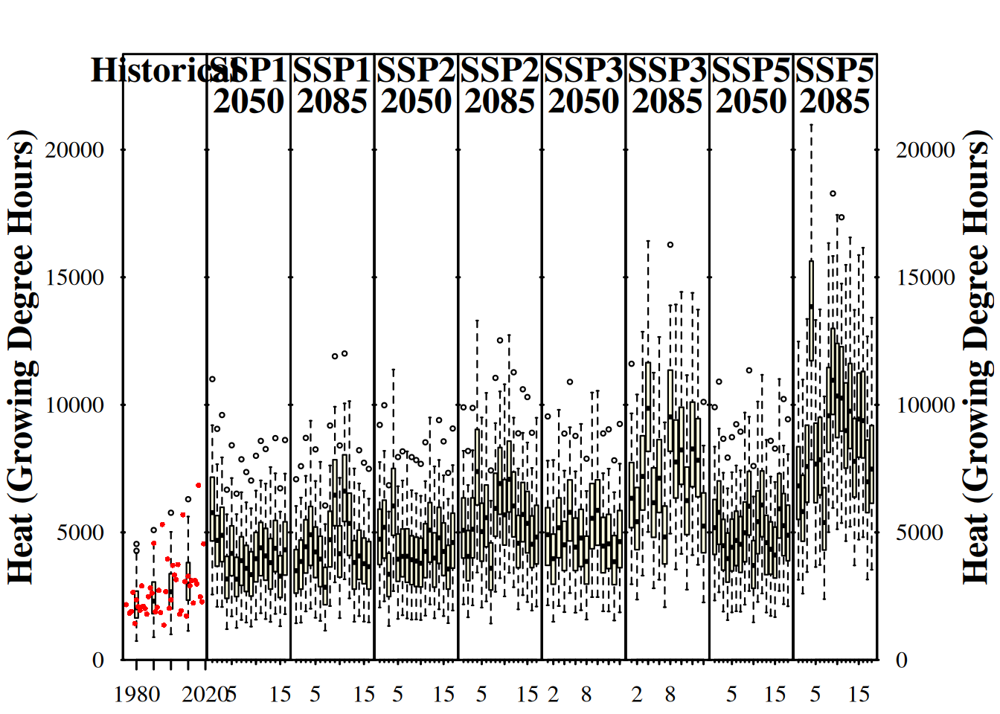

Chapter 16 Making CMIP6 scenarios
Note that running this code requires chillR version >=0.76. You should be able to find it on CRAN. Please refrain from trying to produce CMIP6 projections with earlier chillR versions.
Learning goals for this lesson
- Learn how to download future temperature projections for a CMIP6 ensemble from the Copernicus database
- Be able to produce synthetic temperature scenarios for an ensemble of future climate scenarios
- Transfer knowledge you gained earlier to compute temperature-based agroclimatic metrics for all the historic temperature records, as well as for past and future temperature scenarios
- Learn how to plot all your results in a concise manner
16.1 Accessing gridded climate data from the Copernicus climate data store
As outlined in the chapter on Future temperature scenarios, most future climate data come in the form of grids. This means that if we want to obtain information on a particular climatic metric for a particular place, we may have to download a sometimes fairly large file that contains data for a lot of other places as well. For the CMPI5 scenarios, we were able to use the ClimateWizard API (see Making CMIP5 scenarios with the ClimateWizard), which provided access to only specific point locations. Unfortunately, I haven’t been able to find a similar tool for the CMPI6 scenarios, which (at the time of writing) represent the state of the art. So we may have to look again into downloading gridded data, but let’s try to find an efficient way to do this. While the procedure described below is a little more cumbersome than the ClimateWizard solution (especially if we only want to work with a single station), we are now gaining access to a very reliable and competently curated source of future climate - the Copernicus Climate Data Store, which is maintained by the European Centre for Medium-Range Weather Forecasts (which, by the way, has one of its three offices in Bonn). Copernicus, under whose umbrella this data store is run, is the Earth Observation component of the European Union’s space program.
To make use of the data provided by the Copernicus Climate Data Store via their Application Programming Interface (API), we need user ID and a key (called Access Token on their site). To get this, we have to create a free account here (registration button is in the top right corner). If you want to make use of these chillR functions, please do this now and come back.
Once you’ve set up your account, navigate to your user profile on the Copernicus climate data store website. On this page, you’ll find your User ID and your Personal Access Token (both are long, cryptic lines of symbols). You’ll need these to download data. In the code below, I’ll just put the placeholders write user id here and write key here in the places where these should go. After registering, you also have to read and accept the Terms of Use for Data Access. After this is done, the following code should work.
16.1.1 Downloading future climate data
Now we can start downloading data using the download_cmip6_ecmwfr function. Keep in mind that we can only download data for grids with this function. To achieve this, we need to specify the extent of the download area. In choosing your download extent, note that we’ll actually download the data to our computer. Note also that we can keep the data there, so that we don’t have to download them again. For subsequent steps, we can access these data and extract whatever we need. This means that if we really only want to analyze data for a single station, we can choose a small extent around this station. If we want to evaluate multiple stations, however, especially when these are located close to each other, it may be advisable to choose an extent that includes all these stations.
For this example, I’ll only evaluate data for Bonn, which is located at approximately 7.1°E and 50.8°N. So I’ll choose a small extent around this, which I specify in the form of a vector structured as follows: c(maximum latitude, minimum longitude, minimum latitude, maximum longitude).
Now we can download the data. The download_cmip6_ecmwfr contains a default set of models, which I’ll use here. I’ll start by only using data for SSP1 (ssp126).
download_cmip6_ecmwfr(
scenarios = 'ssp126',
area = area,
user = 'write user id here',
key = 'write key here',
model = 'default',
frequency = 'monthly',
variable = c('Tmin', 'Tmax'),
year_start = 2015,
year_end = 2100)This function took a while to run, and it generated a bunch of files in a subfolder of our working directory. We could change the name of this folder (using the path_download parameter), but since we didn’t do this, the data should be stored in the cmip6_downloaded folder. We also received a message about Dropped models. These are climate models, for which the database contained no data with the specifications we provided. For these models, the function attempted to download data but didn’t find anything in the database. These models are then blacklisted, i.e. the function leaves a note in the download folder to prevent the function from trying to download these data again.
Assuming that this worked well, we should now expand the download to additional SSP scenarios. We can simply provide a vector of such scenarios as the scenarios parameter. I’ll use the scenarios SSP126, SSP245, SSP370 and SSP585. These are the standard scenarios of CMIP6 (and currently the only ones that this function can download). Note that we can add “ssp126” here again, because the function is able to detect whether the respective data have already been downloaded. It automatically skips all files that are already present.
16.1.2 Generating change scenarios
We should now have downloaded a lot of data to a folder called cmip6_downloaded/52_6_50_8. Unfortunately, we still need more. What we have now are future scenarios. The simulated records start in 2015, and earlier data aren’t available for the SSP scenarios. Our first instinct may be to think that this is exactly what we wanted, since we’re interested in projections for the future… but not so fast! These data come out of very coarse-resolution climate models. The pixels of such models often include entire landscapes, with rivers and mountains, coastal areas and inland regions. The values we downloaded represent an average of all of these, so it may be quite unlikely that they are a good approximation of the temperature conditions of our place of interest.
Are these projections useless for site-specific analyses then? Well, the coarse resolution is certainly a problem, and for rainfall patterns or hydrological applications, landscape-scale features may be so important that we may have to wait for someone to apply spatial downscaling to these coarse datasets. In (dynamic) downscaling, the coarse GCM outputs are inserted into a finer-scale climate model that actually represents all the crucial landscape features. After such downscaling, we may have a chance to get accurate information on rainfall patterns etc. Fortunately, we’re really only interested in temperature here. While landscape features also influence temperature dynamics, the effect isn’t nearly as dramatic as for precipitation.
Still, we should not use temperature data from our GCM projections at face value. What I consider quite useful, however, is the temperature change projected by these models. If, for instance, a GCM projects January temperatures that are 2°C warmer than today for some future scenario, then we could add these 2°C to what we observe today (ideally as a scenario for a weather generator).
This may seem easy, but there’s one word that I casually used in the previous paragraph that we may need to get more specific about: today. When we talk about climate change, we often refer to warming by a certain number of degrees, e.g. in the prerogative to limit warming to 1.5°C that the international community agreed on in the Paris Agreement, but such talk only makes sense if we know the baseline that this change is relative to.
Quite obviously, in a warming world, a 2°C change on top of conditions in, say, 1850 takes us to a cooler scenario than if we apply the same warming to today’s much warmer climate. We therefore should be very much aware of the reference conditions that apply to our warming scenario. In the chillR workflow for the CMIP6 data, we can control this to some extent, but we’ve also chosen a useful default for you: the 29-year period from 1986 to 2014. We’re recommending this period because data for this interval are available for the historical model runs in the Copernicus database, because the median year of this interval is a nice round number (2000), and because 29 years is pretty close to the 30 years that climate scientists generally recommend as the basis for a robust climatology.
To create change scenarios from our climate data, we have to do subtract conditions during the baseline period from the future projections. For this, it is important that the baseline and the future data are generated with the same tool, i.e. the same climate model. Fortunately, for every climate model contained in the CMIP6 ensemble, we can also retrieve historical information from the Copernicus database. We can get this done with the download_baseline_cmip6_ecmwfr function.
download_baseline_cmip6_ecmwfr(
area = area,
user = 'write user id here'
key = 'write key here',
model = 'match_downloaded',
frequency = 'monthly',
variable = c('Tmin', 'Tmax'),
year_start = 1986,
year_end = 2014,
month = 1:12)Note that if we specify models = match_downloaded here, the function will automatically look into the download folder, determine what models were used and download all respective baseline data.
16.1.3 Extracting data from the grids
These data are still gridded, so we have to extract the data for the point of interest. To do this, we’ll create a small data.frame that contains the station name and the coordinates for Bonn. We could also add more station locations to this data.frame but for this lesson I’m only interested in data for Bonn. We’ll then use the extract_cmip6_data function to extract the point location data.
station <- data.frame(
station_name = c("Bonn"),
longitude = c(7.1),
latitude = c(50.8))
extracted <- extract_cmip6_data(stations = station)Let’s look at some of the data for one of the climate models.
| Date | Year | Month | Day | lat | lon | location | model | ssp | Tmin | Tmax |
|---|---|---|---|---|---|---|---|---|---|---|
| 2015-01-16 | 2015 | 1 | 16 | 50.9608 | 7.5 | Bonn | AWI-CM-1-1-MR | ssp126 | -13.6960 | 10.8620 |
| 2015-02-15 | 2015 | 2 | 15 | 50.9608 | 7.5 | Bonn | AWI-CM-1-1-MR | ssp126 | -3.2364 | 12.8374 |
| 2015-03-16 | 2015 | 3 | 16 | 50.9608 | 7.5 | Bonn | AWI-CM-1-1-MR | ssp126 | -2.8993 | 13.5311 |
| 2015-04-16 | 2015 | 4 | 16 | 50.9608 | 7.5 | Bonn | AWI-CM-1-1-MR | ssp126 | 0.0531 | 21.7272 |
| 2015-05-16 | 2015 | 5 | 16 | 50.9608 | 7.5 | Bonn | AWI-CM-1-1-MR | ssp126 | 3.9305 | 22.6927 |
| 2015-06-16 | 2015 | 6 | 16 | 50.9608 | 7.5 | Bonn | AWI-CM-1-1-MR | ssp126 | 7.7302 | 24.7364 |
Since we have stored the baseline data in the same folder, we can now use a very compact call to generate change scenarios for all the climate projections in the folder.
| location | Month | Tmax | Tmin | scenario | start_year | end_year | scenario_year | reference_year | scenario_type | labels |
|---|---|---|---|---|---|---|---|---|---|---|
| Bonn | 1 | 3.534321 | 3.748287 | ssp245 | 2035 | 2065 | 2050 | 2000 | relative | ACCESS-CM2 |
| Bonn | 2 | 3.787837 | 3.601785 | ssp245 | 2035 | 2065 | 2050 | 2000 | relative | ACCESS-CM2 |
| Bonn | 3 | 3.844115 | 3.134110 | ssp245 | 2035 | 2065 | 2050 | 2000 | relative | ACCESS-CM2 |
| Bonn | 4 | 2.050318 | 1.988949 | ssp245 | 2035 | 2065 | 2050 | 2000 | relative | ACCESS-CM2 |
| Bonn | 5 | 2.497610 | 2.212458 | ssp245 | 2035 | 2065 | 2050 | 2000 | relative | ACCESS-CM2 |
| Bonn | 6 | 2.063588 | 2.049261 | ssp245 | 2035 | 2065 | 2050 | 2000 | relative | ACCESS-CM2 |
As you can see, all the data are stored in one long data.frame. This is a format that we can easily save as a csv file. We can’t directly use this with our weather generator, but fortunately, chillR has a conversion function called convert_scen_information that can extract the relevant information and produce scenario that are compatible with the temperature_generation function.
write.csv(change_scenarios, "data/all_change_scenarios.csv", row.names = FALSE)
scen_list <- convert_scen_information(change_scenarios)By the way, we can use the same convert_scen_information function to convert this list back to the data.frame format.
Let’s look at one of the elements in the scenario lists.
## $data
## Tmin Tmax
## 49 2.216574 2.021331
## 50 2.759022 2.860477
## 51 1.303613 1.306472
## 52 1.414468 1.573004
## 53 1.329832 1.649632
## 54 1.694997 1.700287
## 55 1.992212 2.369283
## 56 1.815343 2.611570
## 57 2.881619 3.668100
## 58 2.316560 2.867744
## 59 2.293756 2.517477
## 60 3.071128 2.851256
##
## $scenario
## [1] "ssp126"
##
## $start_year
## [1] 2035
##
## $end_year
## [1] 2065
##
## $scenario_year
## [1] 2050
##
## $reference_year
## [1] 2000
##
## $scenario_type
## [1] "relative"
##
## $labels
## [1] "ACCESS-CM2"As you see, this scenario contains changes for the mean daily minimum and mean daily maximum temperature of every month, as well as several pieces of information that define the scenario: scenario specifies the SSP scenario, scenario_type says that this is a relative scenario, and labels contains the name of the GCM. Then we have four attributes that contain years. start_year, end_year and scenario_year describe the time slice that this scenario is for. We see that this corresponds to a 31-year window (2035-2065), with the median of this range (2050) serving as the scenario_year, i.e. the year that this scenario should be considered most typical for. The final parameter, reference_year, is also quite important. This specifies the year that the specified change is relative to, i.e. the temperature changes given in this scenario describe the warming relative to conditions in 2000.
16.1.4 Baseline adjustment
We want to produce scenarios for the future, but we also want to use the observed data from Bonn to inform the weather generator and to ensure that we actually simulate temperatures for Bonn rather than the average conditions of some GCM pixel. In principle, the weather generator can do this, so let’s first try with one of the scenarios.
Bonn_temps<-read_tab("data/Bonn_temps.csv")
temperature_generation(Bonn_temps, years = c(1973, 2019), sim_years = c(2001, 2100), scen_list$Bonn$ssp126$`ACCESS-CM2`)This didn’t work! Instead, we got an error message alerting us that the reference year of the scenario must correspond to the reference year of the future scenario. The reference year of the weather station data is 1996, the median year of the record, which runs from 1973 to 2019. We could decide now to use fewer data. If we only use observations from 1981, the median year of the observations becomes 2000 and it matches the reference year of the future projections. But maybe we really want to use the old data as well. For that case, chillR offers a tool to adjust the reference year based on an analysis of the temperature trends within the observed dataset.
If we want to adjust the baseline of the observed weather, we can conduct a baseline adjustment. For this, we first need to find out how much warming (or cooling has occurred in Bonn between 1996 and 2000). To do this we first determine typical temperature conditions in both years using the temperature_scenario_from_records function.
temps_1996 <- temperature_scenario_from_records(Bonn_temps,
1996)
temps_2000 <- temperature_scenario_from_records(Bonn_temps,
2000)
temps_1996## $`1996`
## $`1996`$data
## Tmin Tmax
## 1 0.05087445 5.973100
## 2 0.30170112 7.765459
## 3 2.64824602 11.830710
## 4 4.11729341 14.859979
## 5 7.96049940 20.258237
## 6 10.70938251 22.305362
## 7 12.69130456 24.902204
## 8 12.59129027 25.055860
## 9 9.55433044 19.936424
## 10 6.40652559 14.743805
## 11 2.82050328 9.284547
## 12 0.59125128 6.078879
##
## $`1996`$scenario_year
## [1] 1996
##
## $`1996`$reference_year
## [1] NA
##
## $`1996`$scenario_type
## [1] "absolute"
##
## $`1996`$labels
## [1] "running mean scenario"## $`2000`
## $`2000`$data
## Tmin Tmax
## 1 0.09988805 5.858946
## 2 0.49252884 7.160050
## 3 2.28318554 11.177201
## 4 4.71233727 15.734978
## 5 8.47214144 20.026544
## 6 11.06516711 22.910953
## 7 13.05248064 25.056007
## 8 12.50039945 24.317309
## 9 10.00297925 20.234706
## 10 6.84385460 15.212160
## 11 3.12932493 9.289817
## 12 0.75027682 6.006636
##
## $`2000`$scenario_year
## [1] 2000
##
## $`2000`$reference_year
## [1] NA
##
## $`2000`$scenario_type
## [1] "absolute"
##
## $`2000`$labels
## [1] "running mean scenario"These are both absolute temperature scenarios, i.e. they describe typical conditions in 1996 and 2000. From these, we can now compute a relative change scenario that describes the changes that occurred over this period with the temperature_scenario_baseline_adjustment function.
## $`2000`
## $`2000`$data
## Tmin Tmax
## 1 0.04901360 -0.114154209
## 2 0.19082773 -0.605409513
## 3 -0.36506047 -0.653509047
## 4 0.59504387 0.874998320
## 5 0.51164203 -0.231693038
## 6 0.35578461 0.605590913
## 7 0.36117608 0.153802780
## 8 -0.09089082 -0.738550863
## 9 0.44864880 0.298282271
## 10 0.43732901 0.468354752
## 11 0.30882164 0.005269925
## 12 0.15902555 -0.072242620
##
## $`2000`$scenario_year
## [1] 2000
##
## $`2000`$reference_year
## [1] 1996
##
## $`2000`$scenario_type
## [1] "relative"
##
## $`2000`$labels
## [1] "running mean scenario"We can now apply this baseline correction to our climate scenarios. For now, this only works with an unstructured list of scenarios, so we’ll have to convert the scenarios again using the give_structure = FALSE option.
scen_list <- convert_scen_information(change_scenarios,
give_structure = FALSE)
adjusted_list <- temperature_scenario_baseline_adjustment(base,
scen_list,
temperature_check_args=
list( scenario_check_thresholds = c(-5, 15)))Now we can start the temperature generation process. Note that, since we have many scenarios, this can take hours. Maybe this seems long, but keep in mind that we’re doing a lot of operations here and imagine you’d have to do them all manually. Since the computer is doing this for us, you can do something else (get a good night’s sleep?) in the meantime.
temps <- temperature_generation(Bonn_temps,
years = c(1973, 2019),
sim_years = c(2001, 2100),
adjusted_list,
temperature_check_args=
list( scenario_check_thresholds = c(-5, 15)))
save_temperature_scenarios(temps,
"data/future_climate",
"Bonn_futuretemps")Definitely make sure to save the data now! We don’t want to have to wait for this again.
Now we can calculate temperature responses based on these records. We can do this efficiently with the tempResponse_daily_list function. The models I’ll select for the calculation are the Dynamic Model for chill accumulation, the GDH model for heat accumulation and a simple model to compute frost hours.
frost_model <- function(x)
step_model(x,
data.frame(
lower=c(-1000,0),
upper=c(0,1000),
weight=c(1,0)))
models <- list(Chill_Portions = Dynamic_Model,
GDH = GDH,
Frost_H = frost_model)chill_future_scenario_list <- tempResponse_daily_list(temps,
latitude = 50.8,
Start_JDay = 305,
End_JDay = 59,
models = models)
chill_future_scenario_list <- lapply(chill_future_scenario_list,
function(x) x %>%
filter(Perc_complete == 100))
save_temperature_scenarios(chill_future_scenario_list,
"data/future_climate",
"Bonn_futurechill_305_59")We’ll later want to plot all our data. In chillR, this is most conveniently done by producing climate scenarios with the make_climate_scenario function. The plotting function we’ll be using later then simply processes a list of such climate scenarios. Let’s start with a historic scenario that contains both the distributions for historic years and the historically observed chill.
We already produced these records and (hopefully) saved them in lesson Historic temperature scenarios, so I’ll just load them now.
chill_hist_scenario_list<-load_temperature_scenarios("data",
"Bonn_hist_chill_305_59")
observed_chill <- read_tab("data/Bonn_observed_chill_305_59.csv")
chills <- make_climate_scenario(
chill_hist_scenario_list,
caption = "Historic",
historic_data = observed_chill,
time_series = TRUE)
plot_climate_scenarios(
climate_scenario_list = chills,
metric = "Chill_Portions",
metric_label = "Chill (Chill Portions)")## [[1]]
## [1] "time series labels"As you can see, this function had two effects. It produced a plot and it returned a short list containing the message “time series labels”. This message isn’t too interesting now, but it will later contain more content. If we want to just store this information rather than immediately displaying it in our output, we can assign the plotting command to a new object (as in info <- plot_climate_scenarios(...). The function will then just produce its side effect, which is the plot itself.
Now we run through the same process for all the future climate scenarios. For each one, we add the climate scenario to the chills object (make_climate_scenario has an argument add_to, where we can specify that). As a preparatory step, we’ll have to identify the data that belong to specific combinations of SSP and Time.
SSPs <- c("ssp126", "ssp245", "ssp585")
Times <- c(2050, 2085)
list_ssp <-
strsplit(names(chill_future_scenario_list), '\\.') %>%
map(2) %>%
unlist()
list_gcm <-
strsplit(names(chill_future_scenario_list), '\\.') %>%
map(3) %>%
unlist()
list_time <-
strsplit(names(chill_future_scenario_list), '\\.') %>%
map(4) %>%
unlist()
for(SSP in SSPs)
for(Time in Times)
{
# find all scenarios for the ssp and time
chill <- chill_future_scenario_list[list_ssp == SSP & list_time == Time]
names(chill) <- list_gcm[list_ssp == SSP & list_time == Time]
if(SSP == "ssp126") SSPcaption <- "SSP1"
if(SSP == "ssp245") SSPcaption <- "SSP2"
if(SSP == "ssp585") SSPcaption <- "SSP5"
if(Time == "2050") Time_caption <- "2050"
if(Time == "2085") Time_caption <- "2085"
chills <- chill %>%
make_climate_scenario(
caption = c(SSPcaption,
Time_caption),
add_to = chills)
}Now we have everything we need to plot the results of our climate change analysis:
info_chill <-
plot_climate_scenarios(
climate_scenario_list = chills,
metric = "Chill_Portions",
metric_label = "Chill (Chill Portions)",
texcex = 1.5)info_heat <-
plot_climate_scenarios(
climate_scenario_list = chills,
metric = "GDH",
metric_label = "Heat (Growing Degree Hours)",
texcex = 1.5)
info_frost <-
plot_climate_scenarios(
climate_scenario_list=chills,
metric="Frost_H",
metric_label="Frost hours",
texcex=1.5)Now we can see the trends in chill and heat accumulation, as well as in frost hours for Klein-Altendorf. As we saw earlier, the function didn’t only return the plot, but also some supplementary information, which we stored in the the info... objects in the latest code chunk. If you inspect these objects, you’ll see that they contain the names of the climate models for each of the subplots (in addition to the time series labels for the historic plot). Since we used the same models each time, all information is listed multiple times. Let’s only look at this once, and only for one of the plots:
| code | Label |
|---|---|
| 1 | ACCESS-CM2 |
| 2 | CNRM-CM6-1-HR |
| 3 | CNRM-ESM2-1 |
| 4 | EC-Earth3-Veg-LR |
| 5 | FGOALS-g3 |
| 6 | FIO-ESM-2-0 |
| 7 | GFDL-ESM4 |
| 8 | INM-CM4-8 |
| 9 | INM-CM5-0 |
| 10 | IPSL-CM6A-LR |
| 11 | AWI-CM-1-1-MR |
| 12 | MIROC-ES2L |
| 13 | MIROC6 |
| 14 | MPI-ESM1-2-LR |
| 15 | MRI-ESM2-0 |
| 16 | NESM3 |
| 17 | CanESM5 |
| 18 | CMCC-ESM2 |
These labels aren’t provided directly in the plot, because they would take up quite a bit of space. Instead, each model is specified by a number, with the key to these number codes given in this table.
If you don’t like the design of this figure, don’t worry. We’ll be making our own version soon (and there’s also a more modern version in chillR now that we’ll get to know later).